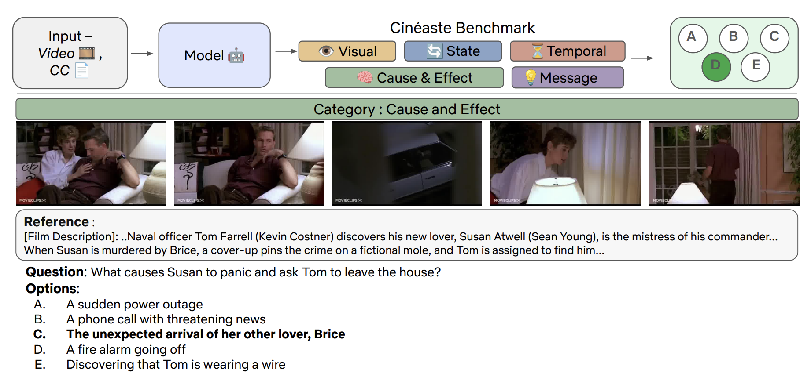
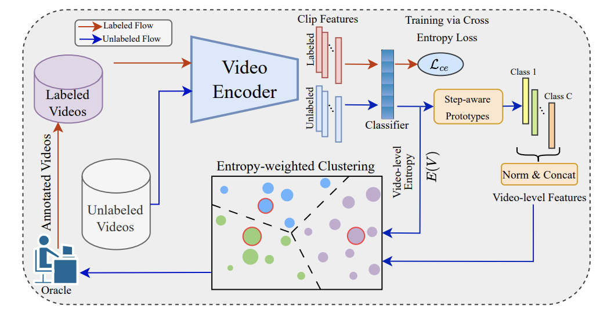
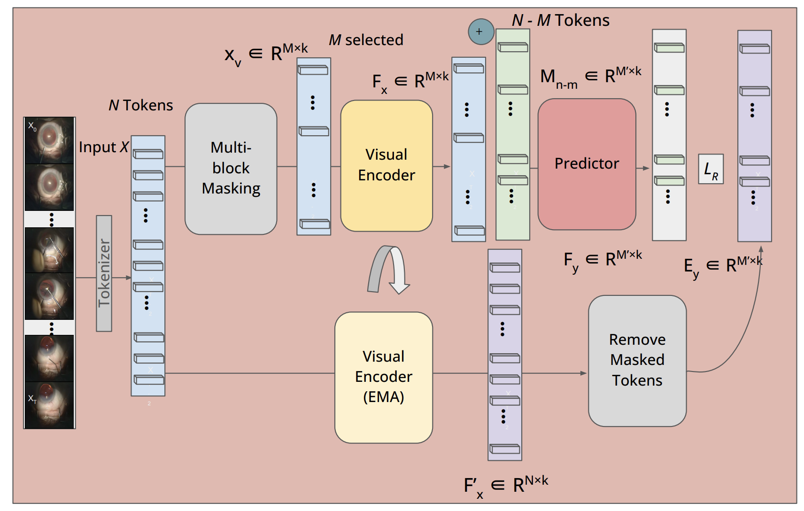
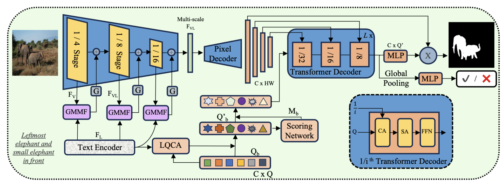
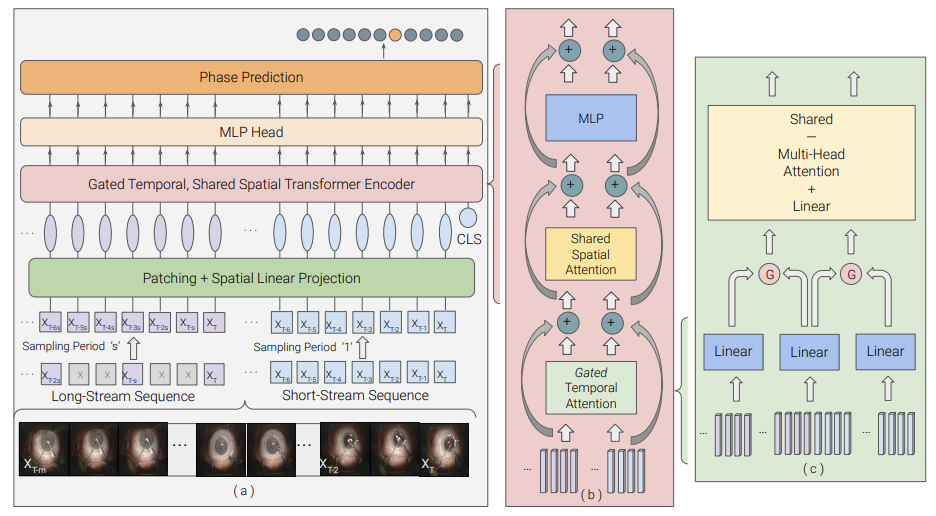
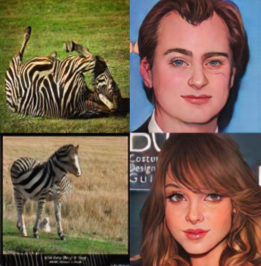
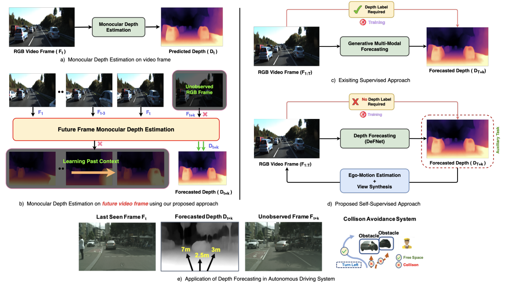
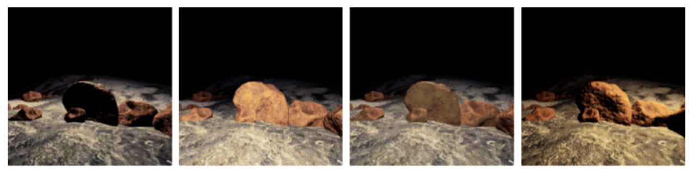
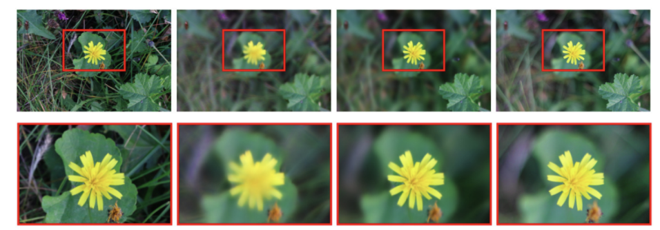

|

Research InterestMy research lies at the intersection of computer vision and natural language processing, where I focus on building advance open-world and multi-modal foundation models. My long-term goal is to develop vision-based agents capable of advanced reasoning and planning, ultimately pushing the boundaries of what foundational models can achieve. |
News
|
Selected PublicationsRepresentative papers are highlighted. * denotes equal contribution. |
|  |
Nisarg A Shah, Amir Ziai, Chaitanya Ekanadham, Vishal M Patel Under Review, 2025 [Paper] |
|  |
Nisarg A Shah, Bardia Bonab, Shameema Sikder, S. Swaroop Vedula, Vishal M. Patel International Conference on Medical Image Computing and Computer Assisted Intervention (MICCAI), 2025 [Paper] |
|  |
Nisarg A Shah, Mingze Xia, Subhasri Vijay, Shameema Sikder, S. Swaroop Vedula, Vishal M. Patel Medical Imaging with Deep Learning (MIDL), 2025 [Paper] |
|  |
Nisarg A Shah, Vibashan VS, Vishal M Patel IEEE/CVF Conference on Computer Vision and Pattern Recognition (CVPR), 2024 [Paper] [Code] [Project Page] |
|  |
Nisarg A Shah, Shameema Sikder, Swaroop Vedula, Vishal M Patel International Conference on Medical Image Computing and Computer Assisted Intervention (MICCAI), 2023 [Paper] |
|  |
Nisarg A Shah, Gaurav Bharaj British Machine Vision Conference (BMVC), 2022 [Paper] |
|  |
Sauradip Nag*, Nisarg A Shah*, Anran Qi*, Raghavendra Ramachandra NeurIPS Workshop on Machine Learning for Autonomous Driving, 2021 [Paper] |
|  |
Sourya Dipta Das*, Nisarg A Shah*, Saikat Dutta, Himanshu Kumar IEEE International Conference on Image Processing (ICIP), 2021 [Paper] |
|  |
Saikat Dutta, Sourya Dipta Das, Nisarg A Shah CVPR Workshop on Mobile AI, 2021 [Paper] |
Academic ServicesI frequently serve as a reviewer for conferences in Computer Vision and Medical Imaging. Recent venues include:
|